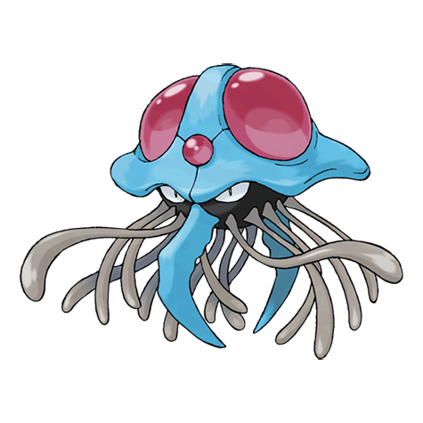

Назад
Тентакруэль

Тентакруэль — Покемон 1 поколения под номером 73 в Покедекс. Обитает он в регионе Канто и относится к Ядовитому и Водяному типу. Это последняя стадия эволюции Покемона Тентакула. На голове у Тентакруэля расположены большие красные сферы. Они светятся перед тем, как поразить окрестности резким ультразвуковым излучением. Если этот Покемон впадает в ярость, он создаёт вокруг себя бурные волны.
Тип:
Ядовитый
Водяной
Эволюция
# 073 Тентакруэль
Финальная стадия